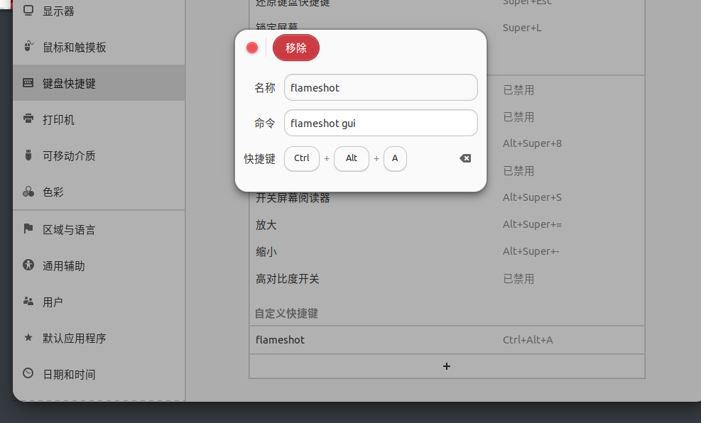

玩转ubuntu-〇贰
关于Ubuntu办公软件
原生的office套件着实让人头疼,不仅打开缓慢,UI界面也是90年代的风格
所以还是WPS吧,适合国人的操作习惯,并且有原生的linux版本支持
不需要再不断繁琐的调试wine这样的反人类的虚拟层
关于markdown编辑器
这里推荐使用Typora,官方有ubuntu的安装方式,照着官网方式一步一步做就可以
如果懒的话,直接snap一键安装(snap想当于Docker版的apt,也就是会一键下载所有软件需要的依赖,并在软件沙箱中运行 )
1 | lemcoden@ubuntu:~$ snap install typora |
关于截图和录屏
原本想用linux版本的QQ,但是linux版本的QQ截图没有编辑功能
所以截图软件推荐使用flameshot
1 | lemcoden@ubuntu:~$ sudo apt-get install flameshot |
支持实时编辑,界面颜色更换,保存本地,复制粘贴板等功能
什么它没有快捷键? 直接在设置 —> 快捷键 增加一条关于flameshot启动命令的快捷键设置就可以,设置图如下

然后是关于录屏的,直接使用obs,简单好用没的说,没事还能做直播
关于划词取词翻译
这个笔者找了好久,因为ubuntu原生的翻译软件都非常古老,基本无法使用,
直到后来发现uTools(一个简易的搜索栏生产力工具箱)的插件列表中,
uTools实现划词翻译功能,有两种方式
- 给划词翻译插件添加快捷键,复制需要翻译的文本,然后再用快捷键呼出翻译网站(得手动复制就很烦)
- 开启超级面板,选中要翻译的文本,点击鼠标中键.就可以自动翻译(字号大小不一的长文本除外)
然后需要提醒一下的就是,uTools并不会开机自启动,所以先which一下uTools的启动程序在哪里
1 | lemcoden@ubuntu:~$ which utools |
然后再启动gnome-session-properties
1 | lemcoden@ubuntu:~$ gnome-session-properties |
添加相应的默认程序启动项